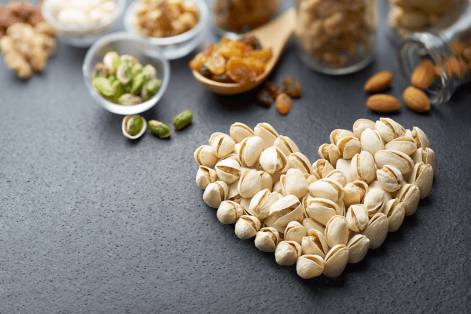

Nourishing and Quick Snack Ideas
Throughout the years, I have been a snacker, and then at other times, I haven’t. I go through phases. Right now, I don’t have any fast rules about snacking, some days I do, and some days I don’t. The key to snacking is to have healthy snacky foods readily available in the pantry, fridge, or freezer. There are a LOT of things that I love about a raw whole food diet, but one thing that is a huge bonus is that most raw recipes can be easily frozen.

When NOT to Snack
- Don’t snack because it’s part of your daily routine. Snack only if hungry, and you are hours away from your next meal.
- Don’t snack out of boredom, which can lead to consuming endless calories that can pack on the pounds.
- Don’t snack during emotional distress.
- Don’t snack when stressed.
- Don’t multitask while eating. You’d be amazed at how many calories you consume when you eat unconsciously.
HEALTHY SNACKING SUGGESTIONS
- Practice Mindfulness so you can truly understand why you are reaching for food.
- Find a snack that has the perfect combination of fiber, protein, and fat – a combo that’s sure to satisfy and fuel your busy day.
- Treat your snack as you would a meal. If at all, stop what you are doing, plate your snack, sit down with it, give thanks, and savor the flavor and nutrients.
- Be prepared. Have healthy snacks stocked at home? If you are going to be away from home most of the day, be sure to take healthy snacks with you.
Getty-Up-and-Go Snacks
Below I have listed out a few ideas for quick grab-and-go snacks. Pre-measure these items into single servings so you can throw them in lunch pails, backpacks, your purse, gym bag, coat pocket, or whatever your travel container might be.
Nuts and Seeds
- Sprouted nuts and seeds make for wonderful snacks as they are rich in concentrated nutrients and healthy fats.
- The fats help to satiate your body and won’t raise your blood sugar levels, which means no sugar crash thirty minutes after eating them.
- Don’t snack on commercially packaged nuts. They are usually roasted in oils that are bad for your health and salted with iodized salt.
- Learn how to soak and dehydrate nuts and seeds (here). This process not only gives the nuts and seeds a great airy and crunchy mouth-feel, but they also taste better and are easier on your digestion.
- If you wish to use nuts and seeds as part of your snack rotation, portion them out in single-serving baggies. This way, they are ready to go, and by portioning them out, you won’t be tempted to over-eat them.
Dried Fruit & Fruit Leather
- I suggest dried fruit with great caution. Dried fruits are full of sugar, so it is essential to limit your intake.
- Look for dried fruits that are naturally dried, void from added sugars and preservatives.
- Medjool dates with almond butter or raw cream cheese piped into the centers are delicious!
- Adding dried fruit to sprouted nuts and seeds can be a great combo. Rather than tossing whole pieces of dried fruit into the mix, dice them up, then toss with the nuts, seeds, and dried, unsweetened coconut flakes. You just need a tiny bit to satisfy your sweet craving when combined with something salty.
- Fruit leather is a treat that travels well. Wrap leather strips in single-serving packages for the ease of grab-and-go. These can be great for kid’s lunch pails as well. I have 70 fruit leather recipes, find a favorite (here).
Fresh Vegetables/Fruit and Dip
Precut veggies into snack-sized pieces, and if you are on the go a lot, pack them up in single-serving containers.
- Carrot Sticks
- Celery Sticks
- Jicama Sticks
- Red/Yellow Bell Peppers
- Radish, sliced
- Cauliflower florets
- Broccoli florets
- Fresh fruit can be a great snack (watch your sugars).
Dips, Spreads, and Dressings
These recipes can be enjoyed anytime. If you busy away from home and want to take snacks with you, place these dips or spreads in single-serving containers. Here are some tasty combinations:
Granola / Bars / Cookies
Raw granola, bars, and cookies are very nutrient-dense foods. With the right ingredients, they can be a powerhouse to help fuel your day. Most of these recipes can be frozen so you can make these up well in advance and enjoy them for days to come. Before storing, cut, and wrap each bar or cookie into a single serving and wrap tightly.
Bars
Cookies
Granola
At-Home Snacks (but not limited to)
These snacks require a tad bit more preparation. They might need a knife to cut them, refrigeration, or a bowl or plate for serving. But that’s not to say that you can’t take these on the road with you. You know your situation, so do what works best for you.
- Cut an avocado in half, remove the pit, drizzle the top with a little olive oil, and sprinkle salt and cayenne pepper on top. Eat with a spoon right out of the skin of the avocado.
- Cucumber slices with coconut vinegar drizzled over the top, sprinkle with nutritional yeast, sea salt, and a little cayenne spice.
- Chia Seed Pudding (mix 2 Tbsp chia seeds with 1/2 cup nut milk, slightly sweetened, sprinkle nuts or fruit on top)
- Raw yogurt + berries or granola
- Pear slices and raw almond ricotta cheese make a satisfying snack with a sweet taste and creamy texture.
- Chunky “Eggless” Egg Salad place in a cucumber boat (cucumber cut in half lengthwise and hollowed out)
- Kale Chips – click (here) for all my kale chip flavors
© AmieSue.com